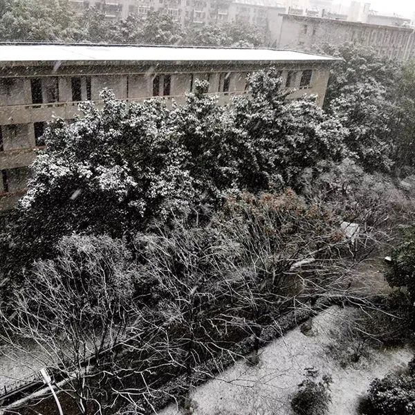
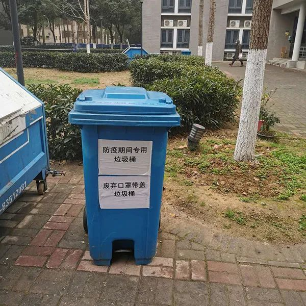
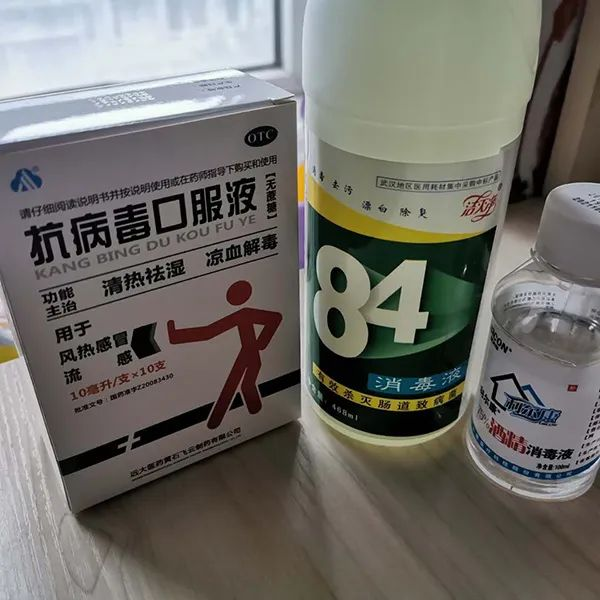
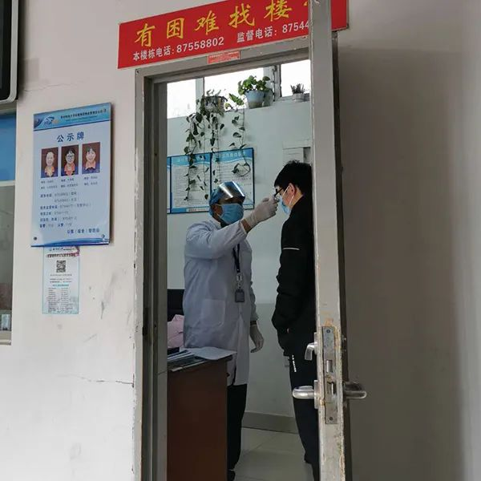

乡村厨师：“赚钱再重要，也不能拿生命开玩笑”
原文链接 备份链接 “ - 疫 情 之 下 - 父亲作为一家之主，把家里卖粮食的一万多块钱当做货款结给了供应商，按照他交代给我们的原话：“咱们已经吃亏了，就不要再让别人吃亏了，也让人家回家好好过个年。” ” …
李仪/华中科技大学新闻与信息传播学院
2月15日，疯狂的电闪雷鸣后，武汉迎来了入冬以来的第一场雪。这座疲惫的城市在大雪纷飞中更加静默，这样的武汉，有些陌生。
仁珺靠在窗边看，不由想起了去年的初雪，下得更早、更烈。那是个没课的早晨，到处都是相约玩雪的朋友，把凉凉的雪天变成了欢闹的宴会。
她忍不住伸手接了一片雪花，好冷，只好缩回手。现在疫情这样严重，可千万不能感冒。

2月15日，仁珺从窗外看到的校园雪景。 本文图均为 受访者供图
作为新闻学院广播电视系的大三学生，她年后要开始大实习了，考虑到假期时间短，回老家云南临沧的机票又贵，仁珺咬咬牙，决定在武汉过年。1月18日以来，仁珺就暂时住在华中科技大学的博士生公寓里，楼里多是寒假留校的学生。

公寓内景图
这是她第一次在外地过年，也是她第一次直面灾难。
一个普通人在灾难面前能做什么呢？仁珺的第一反应是想逃。1月22日晚上，她订好了次日回云南的机票，收拾好行李，躺在床上，比任何时候都思念那个暖洋洋的小城。但凌晨的一纸封城公告堵住了她的回家路。
走不了了。
仁珺不愿意放弃，她23日一早退掉机票，抱着侥幸心理打开买票软件，竟真的抢到了一张早上8：40的高铁票。为了赶着出门，她几乎是跑向行李箱的。但一瞬间，她想到了高铁站人山人海的拥挤。万一自己携带有病毒呢？万一自己在途中感染了病毒呢？万一自己把病毒带回家了呢？
仁珺拨通了爸爸的电话：“我不走了。”
绝望坡不绝望
说不害怕是假的，一向坚强的仁珺在电话里强忍眼泪。留守江城，这绝不是一个能够轻易做出的决定。担心电话那头的父亲听出自己的异样，她努力稳住嗓音的颤抖，听着父亲一遍一遍地安慰、叮咛。
现在她一个人待在疫区，必须要更加小心。抹了抹眼泪，仁珺立刻戴上口罩，全副武装前往校内绝望坡的药店采购。

公寓外专用于丢弃口罩的垃圾桶。
从公寓出来往下走，就是绝望坡，再往下，就到了东九教学楼。长长的一段陡坡，是住在中西边学生上课的必经之路，很多学生踩单车爬坡，经常踩到半路就踩不动了，累得下来推车。时间久了，大家便叫它绝望坡。
但仁珺顾不上累。医用酒精、洗手液、84消毒液、抗病毒口服液……她在心里一遍遍盘算，生怕遗漏什么，好在此时店内物资还算充足，很快便找齐了所需的物品，她却突然听见店员和进门的顾客在高声谈论什么。原来，两位住在华科校内的居民急匆匆赶来，想要多买一些口罩和各类药品。

仁珺在绝望坡药店内购置的部分药品。
“能不能不囤货，多留一些口罩给后来的人？”“疫情再怎么严重也不能乱吃药啊！”仁珺听见那个穿白大褂戴着眼镜的大叔这样说。即使这是营业的最后一天，他也没有放松自己作为医疗从业人员的要求。
临走时，大叔叫住她，眼神瞄向门外的顾客，提醒道：“他没戴口罩，你离他远一些。”仁珺心里暖暖的，这是她在封城后收获的第一份陌生的善意。她感受到一种奇异的力量。
天气阴阴的，有些冷。仁珺走出药店，加快了脚步。绝望坡后便是校内的居民区，上坡路上有各式各样的店铺，像是一条藏在校园里的小型集市街。
在一个水果摊前停下，买了些香蕉和橘子，仁珺顺口一问：“您这里什么时候关门啊？”老板娘挂在嘴边的笑容一下子僵住了。
“我们不停业的。”
仁珺从她灰蒙蒙的眼睛里读懂了，这是另一个被困在武汉的异乡人。
仁珺情不自禁地说了一句：“祝您新年快乐！”她看到老板娘的眼睛里有光闪了一下，也笑着回道：“新年快乐。”那一刻仁珺明白了，那股奇异的力量，来自灾难中的陌生人彼此慰藉的善意和共鸣。
餐馆的小哥、便利店的大叔……破天荒地，性格并不算活泼的仁珺一路走，一路祝福，虽然只是短短的一句话，但她每说一遍，就多一分勇气。
“新年快乐。”
绝望坡并不绝望。
在室中起舞
2月1日，继仁珺除夕夜吃泡面的“凄惨事件”之后，更惨的事情发生了。
博士生公寓宿舍区被封锁了。
从武汉到华科，再到公寓里那方堪堪七八平米的天地，仁珺的活动空间越来越小。她知道，这是疫情越发严重的信号。
仁珺忍不住拿出手机一遍遍刷新一线的消息，将感染者的症状一条条地与自己比对，“我会感染上吗？”她心里没底。
好在校方提供了舒心的食宿环境，没有让为疫情揪心的仁珺再为生活发愁。
仁珺所在的公寓共住了26名学生，大多数是本来就住这里的博士，每个人都领到了45个医用卫生口罩。学生们不能出门，一日三餐都由学校免费配送，每天早上八点到八点半，趁着孩子们下楼领早饭的空挡，宿舍管理员还会为他们量一次体温，以确保没有发热的迹象。

宿管为学生测量体温。
非常时期，宿管的工作多了不少，不仅要像往常一样打扫卫生、按时巡楼，还要负担整栋大楼的消毒工作。同学们经常出入的一楼大厅，他们每天要消毒数次，电梯里贴着他们的工作记录表，完成消毒后要在上面签字。考虑到学生的生活物资消耗问题，学校决定由宿管统计清单，每十天集中采购一次。

张贴在公寓里的宿管消毒情况登记表。
“除了不能出门，在这里住着很好。”仁珺对现在的封锁生活还算满意。
她原定二月初前往北京实习，现在正在做线上的运营工作，虽然很忙，但总算为她单调的生活增添了一些色彩。院系辅导员范老师每天都会通过微信询问她的情况；朋友们怕她无聊，赞助了各大视频网站的会员；和父亲每天的相互问候成为习惯……在这个小小的公寓里，她渐渐学会了在重复的日常中得趣。
担心女儿久坐缺乏运动，父亲常告诫她“多动一动”，从小爱好舞蹈的仁珺便动了在公寓练舞的心思。从前住四人间，空间小还会打扰到其他同学，仁珺只有趁宿舍没人的时候才能看视频学舞。现在一个人住，正好可以练练舞，她会把练习的舞蹈录成视频发到朋友圈，等待父亲的走心评论：“对，就这样，加油！”

大年三十，仁珺一个人在公寓里用笔记本电脑看春晚。
父亲是不善表达的。他不会说那些露骨的思念，但每天一通电话从来不断，每次都要叮嘱她“做好防护”、“好好保护自己”、“好好休息”。一日又一日，仁珺的焦虑和恐惧就在父亲笨拙的关心下消解了。
仁珺留守江城已经一个多月了，尽管还是会因为各种关于疫情的报道揪心不已，但心态已经平稳了许多。一想到全国各地的物资和医务人员都在快马加鞭驰援湖北，她心里就有说不出来的澎湃和感动。
又到了下楼领饭的时间。仁珺戴上口罩，拉紧羽绒服的领口，出门便瞧见有学生喂食公寓附近的流浪猫。这猫不知疫情严重，只管每日大快朵颐，倒是比来的时候胖了一圈。她不禁羡慕起这只猫的自在来。
疫情过后，你最想做什么呢？仁珺的心愿很简单：出去狠狠吃顿好吃的，然后赶快回家。
（文中的“仁珺”为化名）
（指导老师：华中科技大学新闻与信息传播学院教师 周婷婷；澎湃新闻记者 张小莲）
本期编辑 常琛
推荐阅读


原文链接 备份链接 “ - 疫 情 之 下 - 父亲作为一家之主，把家里卖粮食的一万多块钱当做货款结给了供应商，按照他交代给我们的原话：“咱们已经吃亏了，就不要再让别人吃亏了，也让人家回家好好过个年。” ” …
原文链接 备份链接 Original 老九论财经 三联生活周刊 三联生活周刊 About Feature 一本杂志和他倡导的生活。 Today 在全国人民对抗肺炎疫情的战役中，很多人都在想办法贡献绵薄之力，但是一些浑水摸鱼的行为也开始浮出 …
原文链接 备份链接 医护人员冲锋在一线有需要，我们国企和其他企业就要一起做好后勤保障工作，挑起企业抗击疫情的责任担当，相信众志成城、共克时艰不是一句空话，大家一起努力，疫情终将过去，一切都会好起来。 口述 | 周 道 整理 | 周 洁 小 …
原文链接 备份链接 总体而言，港人对待疫情，后来就没有内地那么紧张了。我妈妈讲，她觉得作为一个香港居民，自己最大的感受是彷徨。她抱怨道，在香港，没工开等于没饭吃了；公司起先通知放假到24号，何时复工再议，而现在仍然是等通知的状态。 …
原文链接 备份链接 距新型冠状肺炎疫情公开已经过去二十多天了，从最初的混乱和恐慌至今，人们似乎在一点点变得平静。生活的节奏被打乱，取而代之的是对 “非正常状态” 的逐渐习惯。对很多参与在捐助行动里的人也是，紧张感从没消失，只是变得可以适 …